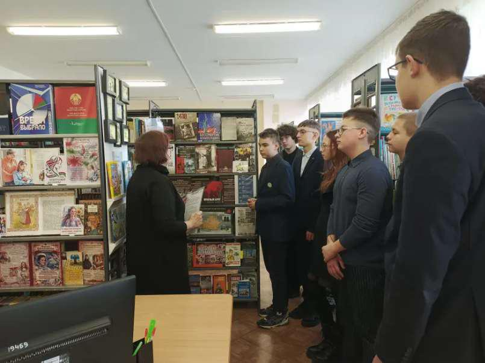

ИНФОРМАЦИОННЫЙ ЧАС В БИБЛИОТЕКЕ
9 марта для учащихся 8 «Б» класса в библиотеке гимназии прошёл информационный час по теме «Судебные процессы в отношении нацистских преступников и их пособников». Мероприятие было направлено на формирование исторической памяти, гражданской ответственности и патриотизма среди учащихся. В ходе мероприятия ребята узнали о Нюрнбергском процессе, который был организован с целью привлечения к ответственности не только тех, кто непосредственно совершал преступления в годы Великой Отечественной войны, но и тех, кто их организовывал. На этом процессе рассматривались такие обвинения, как преступления против мира, военные преступления и преступления против человечности. Учащиеся узнали имена обвиняемых и подсудимых Нюрнбергского процесса. Это Герман Геринг, Рудольф Гесс, Людвиг Борман и другие. Международный трибунал стал первым в истории судом, который включал международные правовые нормы для осуждения и наказания за военные преступления. Процесс помог научить мир тому, как важно защищать права человека и не позволять никому делать зло. В завершение встречи участники мероприятия отметили, что нельзя допустить повторения ужасов войны и геноцида. В мире должен быть мир!
